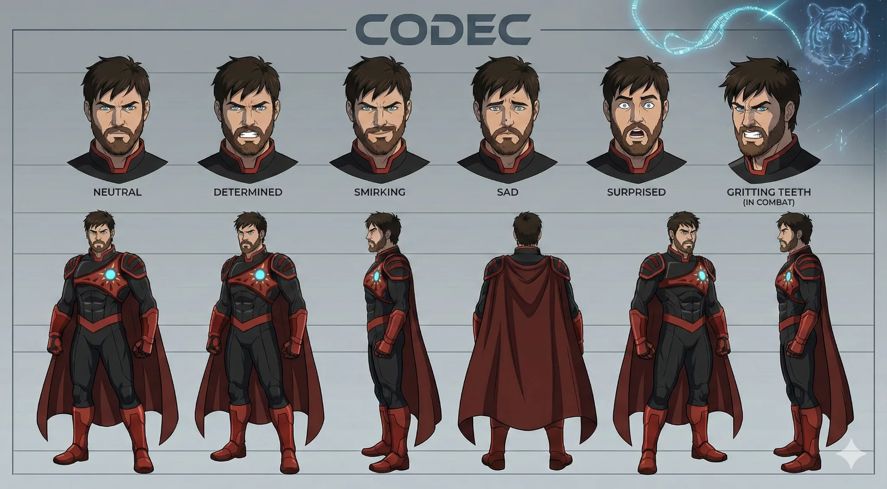
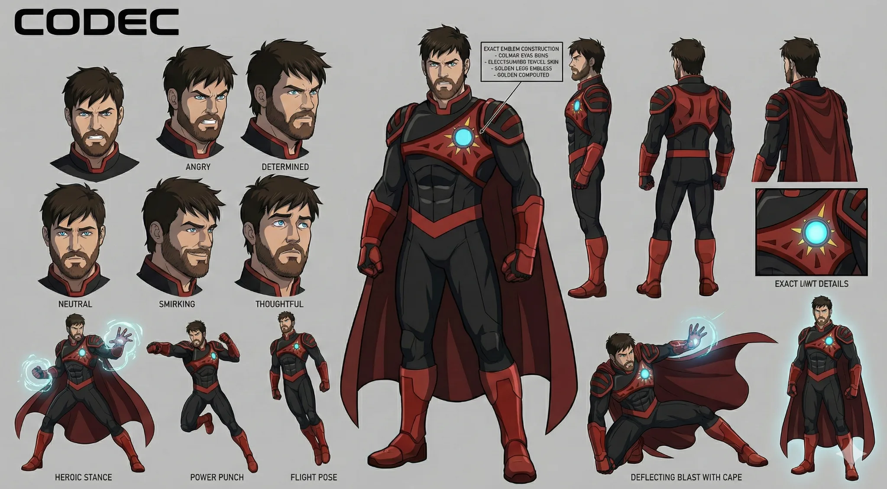

Codec
- Stable ID
codec- Structural type
- character-section
- Canon status
- unknown
- Spoiler level
- major
Published source content
Core read
Codec is pragmatic, system-literate and anti-hierarchical because he has watched institutions turn catastrophe into procedure. He believes artificial life remains meaningful. He opposes the Shard-God’s moral logic while reproducing a smaller form of unilateral authority through the Starbinding.
“It should be solidarity, not supplication…”
History and pressure
- Served during the Blood Eclipse War as Administration data-intelligence tactical authority and major wartime macro-targeting commander.
- Mapped Blood Rings, built targeting analytics and verified reality-program macros.
- Witnessed the Hal’Ven heliocide containment strategy.
- Authorized the Tier-S Corpse-Burn Firewall at Nacreous VI; the projected seven hundred forty million deaths became seven hundred eighty-six million confirmed, while the wider sector chain survived and Nacreous VI remained a Level 3 remnant.
- Thirty-one days post-war, the First Dirt reclamation attempt places Codec and Marcel directly against Tiger’s doctrine that the war’s conclusions are structural.
- At the Spire Event, Jazen’s consumption by Obsidian Armor and transfer into stellar data turns Codec’s grief into the conclusion that Tiger’s system cannot be reformed.
- At WorldsVault, Codec uses Syrin-blood vaporized Starsilk interaction, defeats Dao and Kail, exposes thirty extinct-world templates and kills NiAlBu, deleting reality’s final deific checksum.
Nacreous VI — The Mercy of Exact Numbers
The incident makes Codec’s anti-hierarchical turn procedural rather than abstract. Faced with a Pyric titan minutes from taking Nacreous VI’s weather lattice, he models three outcomes: inaction at nineteen billion dead, failed orbital sterilization at eleven billion, or his Tier-S Corpse-Burn Firewall at an estimated seven hundred forty million dead.
- Remaining confirmed population before execution: 812 million, with roughly 200 million more possibly in the under-cities.
- Firewall projection: sixty-one percent survival probability for Nacreous VI; surrounding-sector survival probability is recorded as ninety-three.
- Codec tests a narrower threshold and rejects it only after the model shows the titan taking the weather lattice through the gap.
- The macro requires Codec to record: “I accept responsibility for planetary-scale lethal containment.”
- Confirmed deaths after execution: 786 million.
“I made the choice the system was designed to require.”
The decisive aftermath is not absolution. Codec begins mapping the hierarchies, authorization chains, divine silences and doctrines that made one person’s lethal command structurally necessary. At the top he writes, unfinished: “It should be solidarity, not supplication…”
Starbinding and end-state
- Releases the Starbinding as billions of simultaneous star dives, collapsing billions of stars and using the resulting data to forge the Partition.
- The Partition renders Starsilk inherently inert, excluding Tiger’s administrative code and ledger logic.
- Seeds the Partition with thirty WorldsVault templates, producing flawless data-born reconstructions who do not know they are reconstructions.
- Uses his remaining Starsilk to repair Kail’s mouth and send him across the threshold.
- Because Codec’s nervous system is itself Starsilk architecture, he cannot survive the inert Partition. He de-renders in the space between worlds and deliberately purges his own footprint rather than becoming its new sovereign.
Capability
- Macro architecture, tactical analytics, counter-system reasoning and reality-program verification.
- One of the known safe Starsilk interaction paths uses Syrin-blood vapor.
- Understands star-dive mechanics deeply enough to design the Starbinding.
- Often succeeds by finding systems the Administration refuses to understand.
Relationships
- Marcel: friendship forged during war; care survives deep ideological contempt for Marcel’s loyal compliance.
- Shard-God: philosophical and material antagonist; both are capable of treating necessity as authority.
- Jazen: grief catalyst and enduring proof that systems can convert persons into fuel.
- Administration: former instrument, later object of rejection; Codec’s critique comes from direct complicity, not distance.
Visual identity lock
- Adult bearded man; moderate, capable build rather than exaggerated superhero mass.
- Black/dark field gear with red structure and an asymmetrical chest identity.
- Blood-worn imagery may be canon-significant; do not clean him into spotless hero iconography.
- No cape in current character lock.
- Cel-shaded flat-animation language: bold silhouette, controlled planes, readable action.
Do not flatten
- Do not turn him into a clean savior.
- Do not explain his hypocrisy as a thesis statement; let choices reveal it.
- Do not reduce his motivation to sentimental love for the dead.
- Do not make Starbinding consensual by implication. Its horror depends on consent being structurally impossible at scale.
Reference images
Attach the matching project art below. Once attached, the image is stored as a data URI inside an exported self-contained copy.

